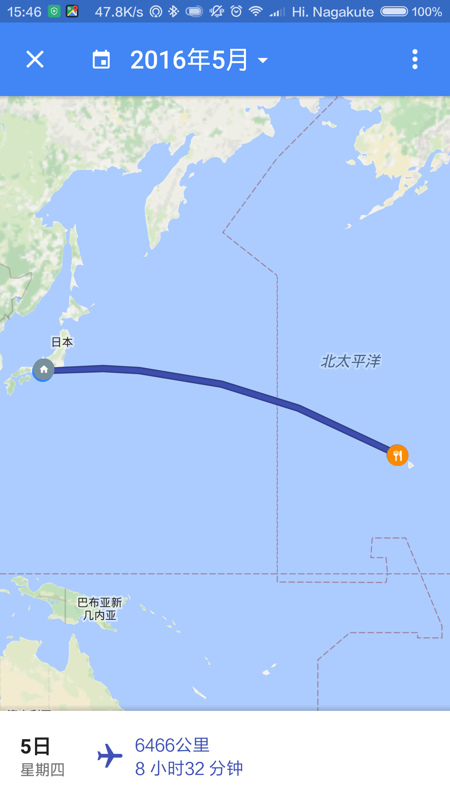
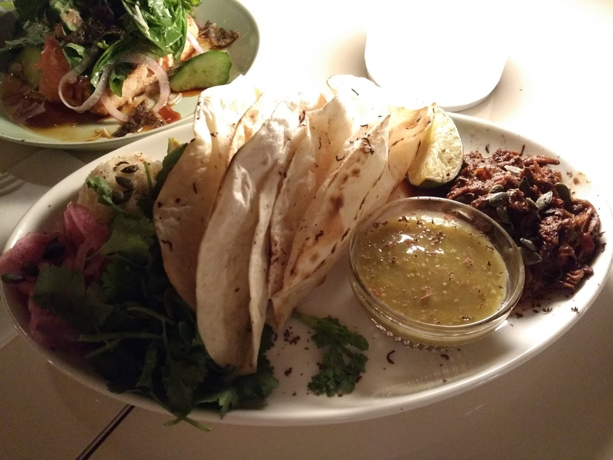
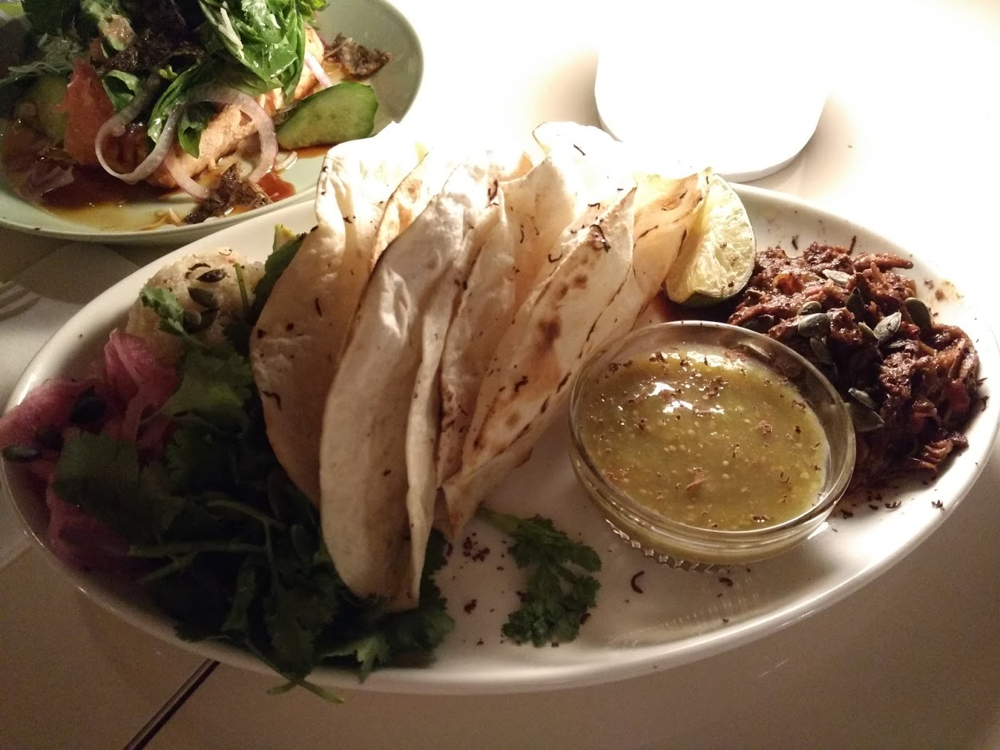

2 夏威夷旅行 – 看海龟在沙滩上晒太阳
2016-07-28 written

上回说到我们一家三口去夏威夷旅行的计划，今天就来说说，我们旅行中详细的体验吧。
2.1 第一天5月5日
名古屋中部机场–檀香山国际机场 JL-794 22:05–10:35 实际航行时间8小时32分钟  飞机是晚上22:05起飞，我们提前一个多小时抵达机场，停车出关。顺便说一下，这次我申请了美帝的旅游签证，果然给了10年有效期。只是本身护照有效期限是截止2019年。之后如果换了新护照，估计我就要每次都背两本护照了。 一开始担心小朋友睡不安稳。后来知道是我们想多了。不过一路上轮流抱着小孩睡也是有点累人。  抵达檀香山机场以后，迅速去找租车公司dollar rental car的机场接送巴士。
抵达檀香山机场以后，迅速去找租车公司dollar rental car的机场接送巴士。  一路上问了好几个当地人，才找到高架底下跟车牌差不多大小的巴士停靠指示牌。这要是在日本，一定是一路都有箭头指向，不需要开口问任何人的。对待游客的细致和粗犷一目了然。顺利领到车以后便打开查好的美食地图想去事先在Yelp上查好的“Ono Hawaiian Foods”，也是Eri推荐的夏威夷餐厅。 但是可能由于我刚到夏威夷，既不熟悉地形，也还没适应开着的SUV。所以前后按着地址来回开了好几趟，也没看到它的门或者停车场在哪里。失去耐心以后发现离那家餐厅的地址也有点远了，于是把车停到路边去，问了一个路过的老太太，老太太也不清楚，随意就指了指不远处另一家叫做the nook neighborhood bistro的餐厅说那里的汉堡还不错。并且还耐心的指导我们怎么停车。第一顿午饭也是真够折腾的。到当地时间快1点了才开始点菜。
一路上问了好几个当地人，才找到高架底下跟车牌差不多大小的巴士停靠指示牌。这要是在日本，一定是一路都有箭头指向，不需要开口问任何人的。对待游客的细致和粗犷一目了然。顺利领到车以后便打开查好的美食地图想去事先在Yelp上查好的“Ono Hawaiian Foods”，也是Eri推荐的夏威夷餐厅。 但是可能由于我刚到夏威夷，既不熟悉地形，也还没适应开着的SUV。所以前后按着地址来回开了好几趟，也没看到它的门或者停车场在哪里。失去耐心以后发现离那家餐厅的地址也有点远了，于是把车停到路边去，问了一个路过的老太太，老太太也不清楚，随意就指了指不远处另一家叫做the nook neighborhood bistro的餐厅说那里的汉堡还不错。并且还耐心的指导我们怎么停车。第一顿午饭也是真够折腾的。到当地时间快1点了才开始点菜。


老婆对这大虾还比较满意。特别是对日本没吃到过的，美帝才有的这些蔬菜类赞不绝口。（$35, 加消费）吃好了第一餐，终于抵达我们在夏威夷的临时的家。 不得不说夏威夷我们选的Airbnb的房东真是选的没错。多亏了我老婆。她找了很久才找到既靠近Waikiki又不太贵，而且还能讲日语的Eri一家。那里是个很大的公寓楼，Eri到楼下来非常亲切地告诉我们怎么停车，怎么每天找门口的保安结算停车费和进出时的注意点，然后带我们乘电梯直上30楼他们的房间。从30楼的窗户看出去就是夏威夷靠山一侧的城市景观，也能看到夏威夷大学。不得不再提一下，Eri她们这里的客人停车24小时才5美金，比起动辄30美金一天的其他大酒店真是划算。
到了Eri家以后，小朋友倒不过时差睡着了，原本想说直接去Waikiki闹市区走走以及magic island看看日落, 参观Iolani Palace的计划就瞬间泡汤了。趁有时间又回顾了一遍自己的计划给Eri听，Eri又新推荐了比如Chief’s Luau和夏威夷动物园等等。我们订机票时从日航获得了一小本优惠券，我出发前专门花时间标注了感兴趣的餐厅。这一日等到熊宝睡醒已是7点多，我们只好尝试从住处步行到Waikiki商业区去Bills Sydney餐厅。

 
 
点了三道菜，一共$47.12 + tips $7.88 = $55美金。有点小贵。而且这里小费费率都在15%以上。真是出血啊。。
吃完晚饭以后趁着夜色穿过一家未知酒店，竟然就不知不觉间就来到了Waikiki海滩。
 可以看到这酒店任性地把泳池建在海岸边上，远看在泳池里的人仿佛也在海里一样，傻傻不能分别。
可以看到这酒店任性地把泳池建在海岸边上，远看在泳池里的人仿佛也在海里一样，傻傻不能分别。
吹了一阵夜里的海风之后惬意满满。回家路上感觉实在是走不动了，正好有个在休息的的士司机把出租车停在这沙滩出来往马路去的地方。于是就上车回家。一路上司机师傅侃侃而谈。还给了个名片，说迷路了找我准没错。其实我知道他带着我们绕了不少路。看他块头好大就不跟他计较了。他还推荐了最佳早餐餐厅，专门吃pancake的店。给了他20美金然后赶紧上楼。感觉不太确定老美司机的热情是不是真的，怕再被他拉上车去兜夜里的夏威夷，收下的名片后来也不知所踪。反正我们自己开车有谷歌地图导航我不怕，哈哈。
总结这一天: 初来乍到。车不习惯，路不习惯，但是很快便适应了。 午餐$35，晚餐$55，在Waikiki路边的店随便买了些早餐和零食$23.2，晚上从Waikiki海滩打车回来绕了路花了$20。之后有天晚上又开车来了一次市区的海滩。到家之后洗澡休息，明天一早要去恐龙湾潜水。三人很快入睡。
2.2 第二天5月6日
插播：之前的日志都是在Rstudio裏面完成的，然而Rstudio至今沒有解決fcitx下中文/日語輸入法的問題，外事不決問google之後發現了名叫Atom的markdown編輯器，於是今後就開始用Atom編輯博客內容咯。
上回說到了夏威夷第一日初來乍到路況不熟，我們第二日一早6點多便起牀上車，一路沿着美麗的沿海高速公路衝向期待已久的恐龍灣Hanauma Bay。先感嘆一句，這海真的很贊。

從高處看藍得讓人心醉。到了沙灘前只見水清見底，那句“水至清則無魚”其實到此便失去了意義，看那水中明明就有各式各樣的熱帶魚在清水中擺尾，自如的遊動。非常愜意。
因爲帶着1歲半的小熊寶，我們倆只能輪流下海浮潛。新買的小蟻相機的水下拍攝效果的確不錯，快看我在水裏的自拍：
還有我拍的水下影像a：
水下影像b：
接下來要放我兒子的視頻了：
聽他光光的小腿邁入大海時純淨爽朗&開心的笑聲，是不是非常的治愈？
秀完在恐龍灣的浮潛，總結一下：這裏的海水，雖然魚的種類顯然沒有帛琉（Palau，大陸叫帕勞）海裏的多，顏色也不如那裏的豔麗（我至今清楚地記得手中握住水母的柔韌感和它的閃閃發光，還有nemo從我耳邊遊過的樣子），沙灘也沒有那邊的白，但是我想應該是受緯度的影響吧，帛琉更加靠近赤道，氣候更加熱帶。然而因爲不是一家人一起去的，我對夏威夷的海評價更高。也許將來有機會帶家人一起去一次帛琉，印象會發生改變也未必。另外帛琉的話，當時都是跟着幾位同事，前輩和老師去浮潛，乘快艇或者參加旅遊的package之類的。因此不曉得有沒有像夏威夷這樣低價或者開放的海岸讓遊客浮潛。有去過的觀衆可以考慮幫忙補充一下。
浮潛大約玩到中午，我們離開恐龍灣打算去找剛路上經過的一個餐廳，名叫“The Original Roy’s in Hawaii Kai”，雖然我知道這家店會有點貴，但是竟然沒有人告訴我，它沒有午餐服務的！！！！！所以我們白跑了一趟，然後我家夫人還把小朋友的玻璃奶瓶打碎了，在我忙於在建築物中找這家餐廳的時候。因此我們只好就近找到Outback steakhouse，很不情願的吃了一頓沒什麼滋味，沒什麼夏威夷風的美式牛排。不過這家Outback靠海邊窗口的椅子到了晚上一定會很搶手吧，直接可以看着海浪拍上沙灘，然後一邊啃着牛肉豈不是很愜意。之前來過幾次美帝，所以對美帝人民飯量和一般牛肉的分量也有心裏準備。就是說基本上點一個漢堡，我吃半個就能飽了的那種。我家夫人尚無此概念，所以看她猶豫了半天以後點的牛排還有她無奈的表情： 這是我點的漢堡：
吃過漢堡以後（其中一大半我們打包帶走了……），我們在Outback的outback停車場裏休息了一個下午，4點多5點時午覺醒來，我們繼續驅車往北十幾分鍾，來到了白天是海洋館，晚上是原住民自助美食的Chief‘s Luau來參加Eri推薦的篝火自助晚餐：
原住民現在（應該）幾乎都沒有繼續住在樹林裏了，如果你還能看到他們的話，大多就是穿成下面這個樣子偶爾出來跳個舞助助興之類的了吧：
結果我家夫人抓着一個本地人要編樹葉做的頭飾：

一家三人都戴着頭飾時，我們是這樣子滴：
上兩段視頻讓大家感受一下現場演出的氛圍，一個人$85美金，無小費：
整個演出從傍晚5點左右一直持續到8點多，一開始天還亮的時候主持人還會帶我們一起跳草裙舞(フラダンス)，後面天黑以後還有精彩的篝火表演。全程幾乎無尿點，夏威夷原住民，當然還有附近海域其他島嶼居民的文化得以充分展現，非常的有意思，而且自助餐的夥食也非常不錯，感謝Eri的推薦。
我們8點多看完演出後，又緊趕慢趕驅車去市中心的沃爾瑪購買奶瓶，順便也買一些第二天的早餐。找了在沃爾瑪找了大半天也沒用找到玻璃瓶的嬰兒奶瓶。問了服務員說我們沒有玻璃的，只有塑料的。於是只好放棄，買了個$1的塑料奶瓶將就一下。回到家裏已是夜裏11點，三人累得精疲力竭，我們第三天的計劃是去KCC Market + 爬鑽石山 the Diamond Mountain + 夏威夷夜景。
2.3 第三天5月7日
这一天我们之所以安排了去KCC市场，很大部分也是因为Eri在Airbnb上面的推荐，然后还有就是我家夫人不知道从哪里听来的有人说【去夏威夷一定要抽时间去看看KCC market】，因此我們也相當期待這個每周六才有的一個早市。一早起來還有些微微細雨，我们便带上小熊驱车来这个KCC市场。
看地图，平时KCC市场是应该是一所社区大学(Kapiolani Community College)只是到了周六早晨才變成一个農貿市場一樣的集市。